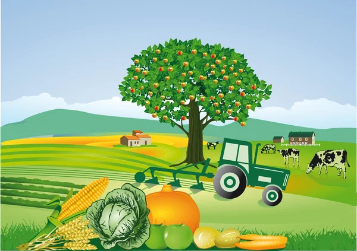
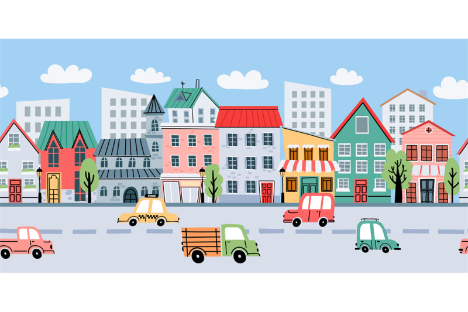

O que é o Programa Agrinho?
O Agrinho é um programa educacional promovido pelo SENAR-PR em parceria com escolas públicas. Ele estimula a reflexão sobre o campo e a cidade, educação ambiental, cidadania e inclusão social.
Campo e Cidade: Um Diálogo Sustentável


Quem Somos
Estudantes engajados com o futuro sustentável do Paraná, promovendo a união entre campo e cidade por meio da educação.
Equipe 3ºA
- Laryssa Mendes
- Amanda Oliveira
- Cleiton Rodrigues
Contato
Email: contato@agrinho2025.com
Instagram: @agrinho2025